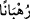

sevineyim?”[24] diyerek Habeşistan’a hicret eden müslümanların dönüşüne ne kadar çok
sevindiğini ifade eder.
Ca’fer b. Ebî Tâlib’in döndükten sonra Necâşî, oğlu Ezher b. Asheme’yi altmış
kişiyle berâber Hz. Peygamber’e gönderdi. Oğluyla gönderdiği mektupta şunlar
yazıyordu:
“Ey Allah’ın Rasûlü! Senin doğru ve doğruluğu tasdik edilen Allah’ın Rasûlü
olduğuna şehâdet ederim. Ben sana ve amcanın oğluna (Ca’fer b. Ebî Tâlib) bey’at
ettim. Âlemlerin Rabbi Allah’a teslîm oldum. Bey’atımı bildirmek üzere oğlum
Ezher’i gönderdim. Sana bizzat gelmemi istersen gelirim. Selam sana ey Allah’ın
Rasûlü.”
Necâşî’nin oğlunun başında olduğu hey’et Ca’fer b. Ebî Tâlib Habeşistan’tan
ayrıldıktan biraz sonra gemiyle yola çıktı. Denizin ortasına ulaşınca battılar.
Ca’fer b. Ebî Tâlib (r.a.) Habeşistan’dan Medîne’ye Rasûlullah (s.a.)’in yanına
üzerlerinde yün elbiseler bulunan yetmiş kişiyle ulaşmıştı. Onlardan altmış ikisi
Habeşistanlı, içlerinde Rahip Bahîrâ’nın da bulunduğu sekiz tanesi ise Şamlı idi.
Rasûlullah (s.a.) onlara Yâsîn sûresini sonuna kadar okudu. Kur’ân’ı dinleyince
ağladılar. “Bunlar Îsâ (a.s.)’a indirilene ne kadar çok benziyor.” dediler ve îman ettiler.
İşte bu olay üzerine “Onlar içinde îman edenlere sevgi bakımından en yakın olarak da
‘Biz hristiyanız.’ diyenleri bulacaksın” âyeti nâzil oldu. Yani, âyette bahsedilen ve
Ca’fer’le gelen, hepsi de din adamı olan bu heyettir.
Onlar mü’minlere sevgice en yakın insanlardır. “Çünkü onların içlerinde keşişler ve
râhipler vardır.” Keşiş diye tercüme edilen
“
” hristiyanların âlim, âbid ve ileri gelen din adamlarıdır. Gece bir şeyi çok
araştıran, ardına düşen anlamındadır. Onlar ilim öğrenmedeki aşırı gayretleri sebebiyle
böyle isimlendirilmiştir. Râgıb’ın el-Müfredat’ında böyle geçmektedir. Kutrub ise “
”in Rumcada âlim anlamında olduğunu söyler.
Urve b. Zübeyr’den şöyle nakledilir: Hristiyanlar İncil’i tahrif ettiler ve içine
İncil’den olmayan şeyler soktular. Yalnızca Kıssîs isminde bir âlim gerçek din üzerinde
kaldı. Bozulan dîne tâbî olmadı. İşte bu zâtın peşinden gidenlere “kıssîs” denir.
Âyette “ruhbân” olarak geçen kelimenin müfredi “râhip”dir. Bir tek fert için
kullanıldığı gibi bir cemaat için de kullanılır. Aynı kökten türeyen “terahhub” kelimesi
ise ibadet için manastıra çekilmek anlamındadır. Râhiplerin âyette “
” şeklinde
nekra olarak gelmesi onların miktarının çok olduğuna işaret etmektedir. Aynı mânâ “
” kelimesinde de mevcuttur.
Bu, cemaat olarak hristiyanların mü’minlere karşı sevgisine delalet eder. Çünkü bir
cemâat mensuplarının çoğunda bir özellik varsa bu o cemâatin diğer fertlerinde de bu
özelliğin bulunacağı zannını güçlendirir. Yoksa yahûdîlerden de bir grup hidâyete
ermiştir. Nitekim Allah Teâlâ Abdullah b. Selam ve benzerleri hakkında “Ehl-i kitap
içinde istikâmet sâhibi bir topluluk vardır ki, gece saatlerinde secdeye kapanarak
Allah’ın âyetlerini okurlar.” (Âl-i İmran, 3/112) buyurmaktadır. İçlerinde böyle bir